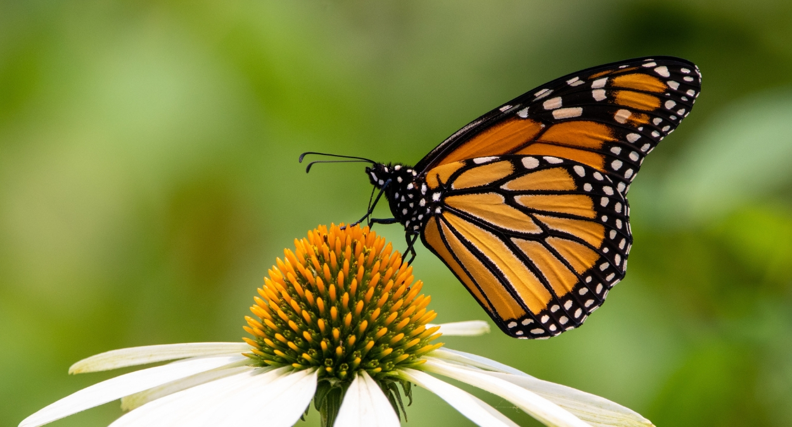
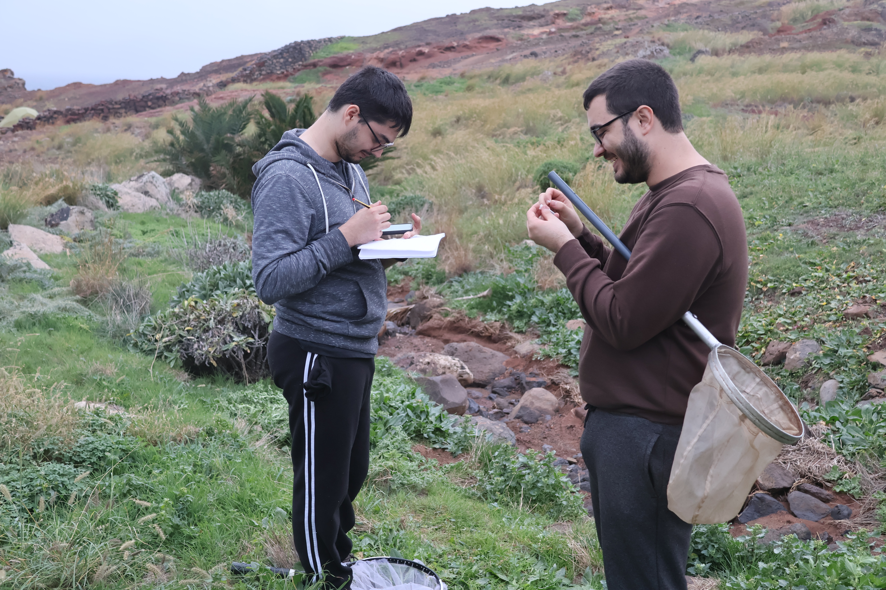
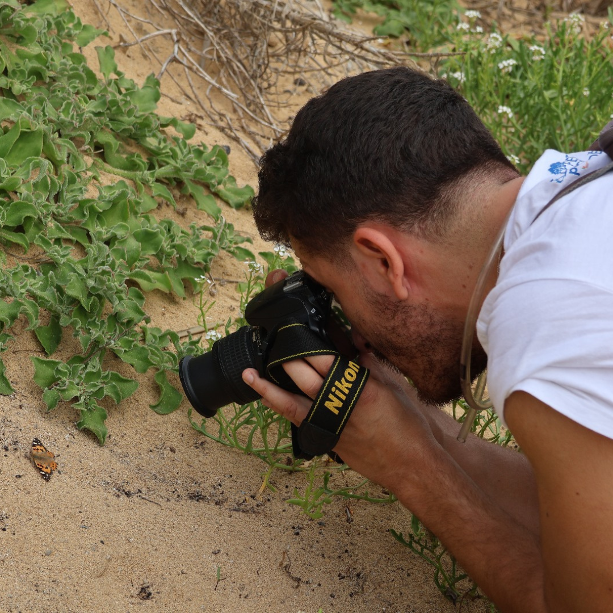
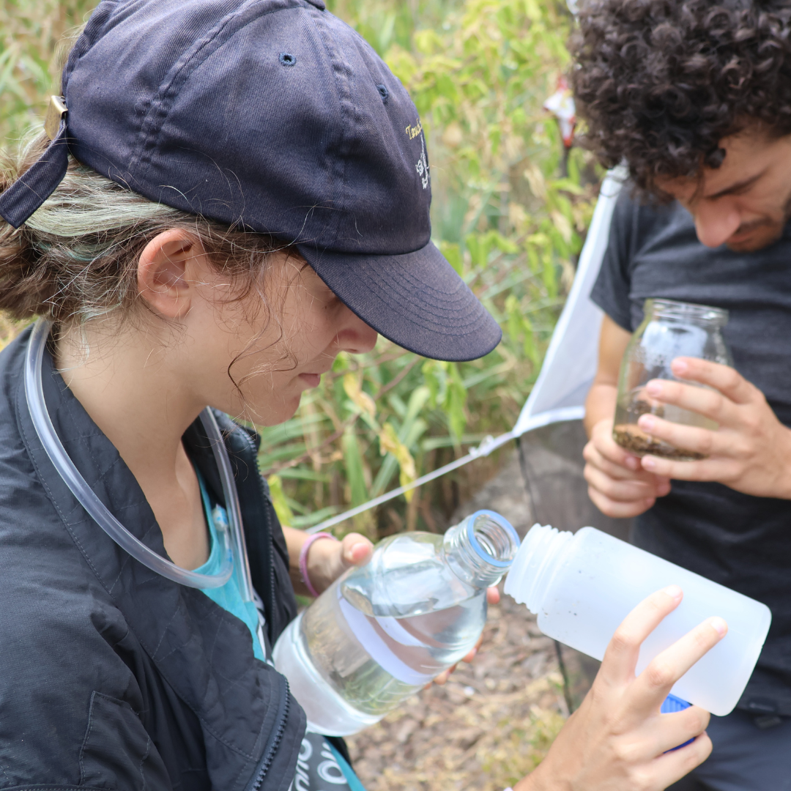

Com mais de 3400 espécies descritas, os insetos são o grupo de animais mais diverso
do Arquipélago da Madeira e alvo de estudo por parte de docentes e alunos.


Os insetos são o grupo de animais mais diverso do Arquipélago da Madeira e alvo de estudo por parte de docentes e alunos.
Assim, em 1998 foi criada a Coleção de Insetos da Universidade da Madeira. Venha conhecer uma das maiores coleções de insetos do arquipélago.

Exemplares organizados para ensino e formação científica em ciências biológicas.
Explorar →Vetores e espécies com relevância para saúde pública e epidemiologia médica.
Explorar →Auchenorrhyncha e outros grupos com foco nas espécies do arquipélago.
Explorar →Para investigadores, estudantes ou entusiastas — estamos disponíveis para partilhar conhecimento.